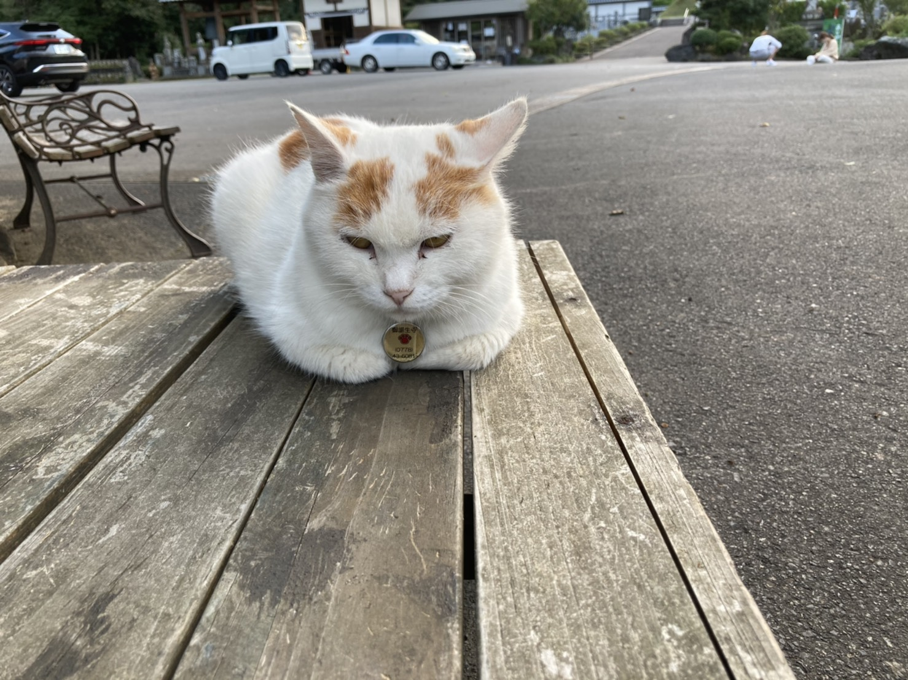

ね ： 猫と遊ぼう 御誕生寺
一言でいうと？
猫好きなら一度は行きたい！たくさんの猫が集まるお寺
仁愛大学の近くにあるお寺「御誕生寺(ごたんじょうじ)」！
猫好きなら一度は訪れてほしいと言われるほど、猫がたくさんいるお寺で、地元の人には「猫寺(ねこでら)」と呼ばれてます。
なぜたくさん猫が？
お寺の建設中に住み着いた！
本堂が完成したのは2009年ですが、お寺の建設中に捨て猫が4匹住み着き、猫好きだった住職(じゅうしょく)さんが保護(ほご)したことがきっかけです。
そこから猫が増えていき、1番多い時にはなんと80匹の猫をお世話していたそうです。(今は約30匹)
2013年頃からフェイスブックやブログなどで里親探しを始め、3年間で300匹以上の猫と里親の縁を結んできました。
珍しい大仏がある？
大仏と猫のコラボ！
本堂の前には全長7ｍの大きな大仏の像があります。
が！その像の膝の上を見ると…なんと猫が！
大仏と猫が一緒に彫られているなんて、世界でもここだけではないでしょうか？
いつか全ての猫たちが里親を見つけて静かなお寺になったとき、この大仏が「猫寺」のシンボルになってくれますようにと願いがこめられています。
何ができるの？
猫をなでたり、写真を撮(と)ったり！
全国の猫好きたちが年間3万人訪れ、猫の撮影(さつえい)や見学ツアーも受け入れているので、お寺にいる猫は自由になでたり、写真を撮ったりすることができます。
※おやつは禁止(肥満防止)
※追いかけまわす、執拗にかまうの禁止
▼こんなに近くで写真が撮れます！
 朝7時と午後3：30は猫たちのお食事タイムなのでオススメです！
また、猫にちなんださまざまな取り組みがされています。
★猫の医療募金(いりょうぼきん)
避妊(ひにん)手術や病気の治療などはお寺が負担しているので、食事や医療費の足しに、招き猫の募金箱が設置されています。
★オリジナル御朱印帳(ごしゅいんちょう)
猫柄のかわいい御朱印帳をかうことができます！
★招き猫おみくじ
招き猫が今後の運勢(うんせい)を教えてくれる…⁉
お問い合わせ
0778-43-6081
住所 ≫ 越前市庄田町32
料金 ≫ 見学無料
電話 ≫ 0778-43-6081
猫の受け入れはしていません。捨て猫はダメ！
「犬も猫も飼っていない、動物初心者の私が行っても大丈夫かな…」と思っていたのですが、猫さんたちは近づいても逃げることはなく、恐る恐る撫でてみても「勝手にどうぞ」状態で笑ってしまいました(笑)数10分だけでも4匹の猫さんは撫でることができたので、猫好きの方も、普段猫と触れ合えない方もぜひ行ってみてください！